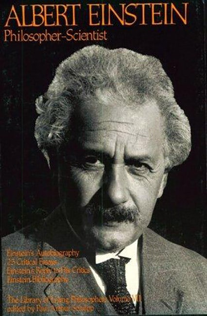
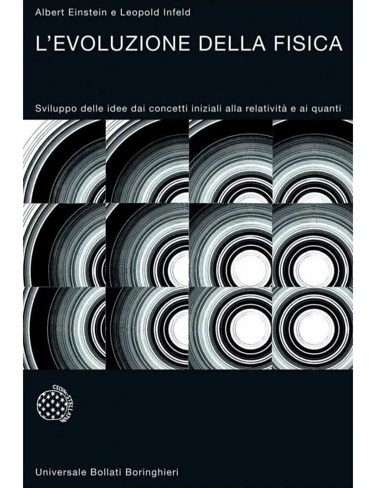
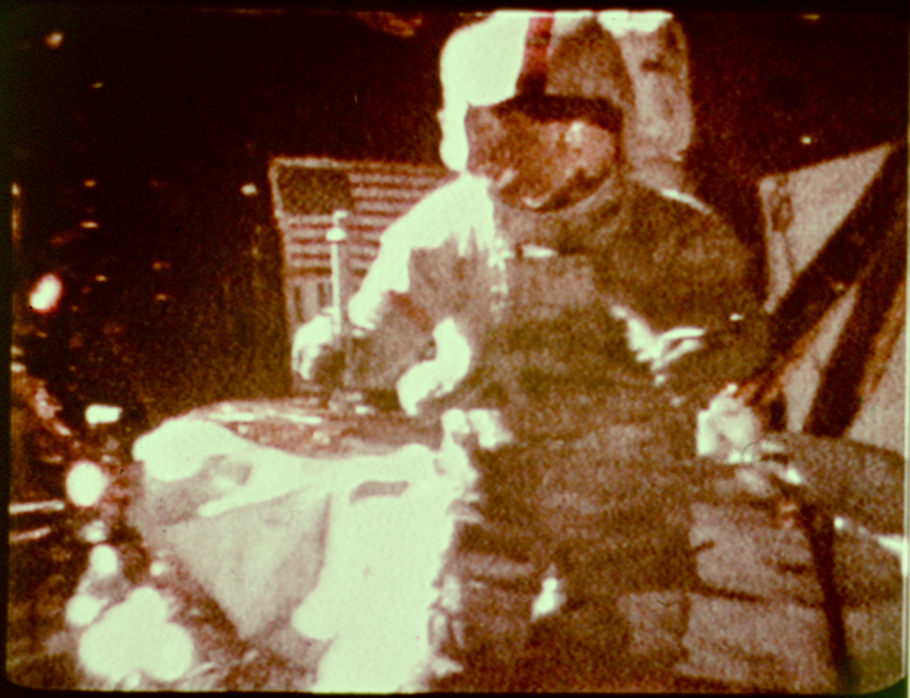

1:00:05 · 3 OPERE
Note sulla Relatività di Einstein
Il filo del discorso
Il contributo presenta la relatività attraverso una domanda sul modo di costruire conoscenza: come si passa da un’immagine intuitiva a una teoria capace di cambiare la descrizione del mondo? Il relatore colloca Einstein fra fisica, filosofia e cultura del Novecento, ricordandone la celebrità, gli interlocutori e il ricorso agli esperimenti mentali. Le osservazioni dell’eclisse del 1919 introducono il rapporto fra ipotesi e verifica, mentre i richiami alla geometria mostrano il tentativo di rendere visibile un nuovo modo di pensare la gravitazione. Il libro scritto con Infeld è valorizzato come esempio di esposizione fondata su idee e problemi, prima ancora che sul formalismo. La parte centrale procede per situazioni immaginate: veicoli che si incontrano, segnali luminosi, un’astronave, uno specchio e una palla lanciata in un vagone. Il filo riconoscibile è il confronto tra descrizioni e sistemi di riferimento, insieme al superamento di alcune intuizioni valide soltanto alle velocità ordinarie. Il relatore passa poi al legame fra energia e massa, alla luce e al confronto di Einstein con Bohr. In questi tratti la trascrizione automatica è particolarmente deteriorata: la scheda conserva gli argomenti distinguibili, senza ricostruire equazioni dettate o attribuire nomi a paradossi che la fonte non permette di identificare. L’ascensore introduce l’equivalenza locale e una parentesi su un universo riscalato porta al problema delle misure. Il richiamo alla velocità della luce e alla costante di struttura fine rende evidente quanto sia necessario distinguere intuizione, definizione e risultato sperimentale. Nella conclusione il discorso ritorna all’insegnamento: modelli dell’atomo, schermatura e caduta dei gravi servono a invitare chi studia a interrogare i fenomeni e a progettare confronti osservabili. Il filmato lunare del martello e della piuma fornisce un riferimento documentario riconoscibile per l’ultimo esempio. La qualità debole dell’ASR richiede una lettura prudente dei dettagli tecnici. Le note editoriali offrono quindi precisazioni autonome su cronologia, luoghi delle osservazioni, osservatori alla velocità della luce, massa invariante, fotoni, accelerazione, misura e radiazioni. Non correggono in silenzio il parlato né presentano le formulazioni incerte come una spiegazione scientifica verificata: consentono invece di seguire il percorso divulgativo del relatore e riconoscerne i limiti documentari.
I libri nel discorso

Albert Einstein: Philosopher-Scientist
Identificazione probabile
Copertina: Open Court · ripubblicazione 1999 · The Library of Living Philosophers VII
Copertina autentica della ripubblicazione Open Court distribuita da IndiePubs, ISBN 9780875481333. Il volume collettivo contiene l’autobiografia intellettuale, saggi critici e risposte di Einstein: non si attribuisce tutto il testo al solo Einstein. Nessuna edizione è accertata come quella del video.
Raccolta di una collana sui filosofi viventi, anni 1940–1950, dedicata a Einstein filosofo. Il titolo completo è identificato dal contesto bibliografico, con ASR fragile e senza attribuire una specifica edizione al filmato.
Passaggio 6:08 ↗ · Fonti e libro ↗
L’evoluzione della fisica. Sviluppo delle idee dai concetti iniziali alla relatività e ai quanti
Identificazione probabile
Copertina: Universale Bollati Boringhieri · anno e tiratura della copertina non accertati
Immagine autentica del titolo di Einstein e Infeld, con marchio Universale Bollati Boringhieri leggibile. Il venditore descrive un usato 1965, ristampa 1982, ma l’immagine appartiene alla diversa denominazione editoriale: quella data non è attribuita alla fotografia. Anno, tiratura e ISBN della copertina non certificati; nessun ISBN elettronico associato al libro cartaceo.
Libro di Einstein scritto con Leopold Infeld e presentato come esposizione della fisica senza equazioni. Titolo non pronunciato: identificazione probabile, mantenendo l’originale ASR.
Passaggio 17:15 ↗ · Fonti e libro ↗
Dimostrazione del martello e della piuma (Apollo 15)
Identificazione probabile
Fotogramma NASA: dimostrazione martello e piuma: NASA · dimostrazione Apollo 15 ·2 agosto 1971 · fotogramma televisivo
Fotogramma autentico della ripresa televisiva NASA dell’esperimento, conservato nel repertorio NSSDCA. Immagine storica con grana e bassa definizione del segnale originale: non è una copertina libraria o una ricostruzione; nessun video integrale viene esportato.
Descrizione del filmato lunare della caduta di una piuma e un martello. Identificazione tramite l’evento documentato da NASA, non tramite un titolo pronunciato.
Passaggio 57:07 ↗ · Fonti e libro ↗